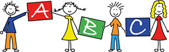
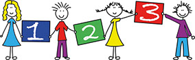

Praxisprofil
Säuglinge
Kleinkinder
Schulkinder
Prävention
Beratung
Lernwerkstatt
Erwachsene
Wähle eine Kategorie aus...
Säuglingstherapie
Die Eltern-Kind-Interaktion hat in den ersten Lebensmonaten einen besonders prägenden Einfluss auf das Verhalten und die Entwicklung Ihres Kindes.
Bei “schwierigen" Säuglingen fällt Eltern oftmals eine angemessene Verhaltenssteuerung schwer, so dass diese Kinder bereits im ersten Lebensjahr durch zusätzliche Regulations- und Interaktionsschwierigkeiten auffallen.
Wir bieten in unserer Praxis frühe präventive und therapeutische Maßnahmen an:
- Schrei-, Fütter- und Schlafberatung
- Beratung bei verzögertem Erreichen der Grenzsteine der Entwicklung, z.B. Bauchlage, Kopfkontrolle, Krabbeln...
- Hilfe bei Haltungsanomalien, z.B. Überstrecken, Liegen auf Lieblingsseiten
- Sensorische Integrationstherapie: Befund und therapeutische Optionen im ersten Lebensjahr
- Neurophysiologische Behandlung nach dem Bobath-Konzept
- Beratung bei frühen Interaktionsstörungen
- Anleitung zum Handling
- Anleitung bei Körperkontaktproblemen
- Elternschulung, z.B. Umgang mit dem Kind, Verstehen des Kindes, Spielberatung...
Kleinkinder - Kindergartenkinder
Wenn die Wahrnehmungsaufnahme, -verarbeitung und -vernetzung gestört ist...
Im Kleinkindalter und Kindergartenalter können durch gezielte Förderung und Beratung rasch Entwicklungsfortschritte erzielt werden.
- ...verzögert sich das Erreichen der motorischen Meilensteine (Krabbeln, Laufen..), auch bei (drohender) Behinderung.
- ...zeigen sich Kinder in ihrer Bewegungslust eingeschränkt oder bewegungsängstlich.
- ...sind Kinder überempfindlich oder unterempfindlich bei Berührung, Bewegung, Geräuschen und wehren Körperkontakt ab.
- ... ist das Kind überwach, zeigt Schlafstörungen, ist ein “Schreikind”.
- ...zeigt das Kind Einnässen, Einkoten, Essprobleme, Trinkprobleme.
- ...zeigt das Kind Trennungsangst.
- ...zeigt das Kind sich zappelig, unorganisiert und hat eine schlechte Gefahreneinschätzung.
- ...sind häufig Tagträumereien zu beobachten.
- ...entwickelt das Kind zu wenig Selbstständigkeit in Alltagshandlungen (z.B. An- und Ausziehen).
- ...spielt es nicht ausdauernd, wechselt oft das Spielangebot.
- ...wird es schnell wütend, aggressiv, kann nicht verlieren.
- ...ist es unorganisiert.
- ...hat es wenig Freunde, weil es fraglichen Umgang mit anderen Kindern zeigt (Hauen, Angst...).
- ...zeigt es abweichendes Verhalten in der KiTa, in Gruppensituationen.
- ...zeigt es Bewegungsauffälligkeiten.
- ...zeigt es Verzögerungen in der Malentwicklung und einen ungeschickten Werkzeuggebrauch, z.B. Schere.
- ...zeigt es eine schwache Umsetzung sprachlicher Anweisungen.
Wir bieten in unserer Praxis an:
- Sensorische Integrationstherapie
- Motorisch funktionelle Behandlung
- Neurophysiologische Behandlung nach dem Bobath-Konzept
- Förderung der Handgeschicklichkeit
- Marburger Konzentrationstraining
- Beratung zur Förderung Ihres Kindes im häuslichen Alltag
- Hilfsmittelberatung
- Beratung bei der Arbeitsplatzgestaltung / Spielumfeldberatung / Spielzeugberatung
Schulkinder
Wenn die Wahrnehmungsaufnahme, -verarbeitung und -vernetzung gestört ist...
- ...kann sich das Kind nicht konzentrieren, ist ablenkbar, zappelig und stört den Unterricht.
- ...neigt das Kind in der Schule zu Flüchtigkeitsfehlern und arbeitet unsorgfätig.
- ...ist das Kind unorganisiert und vergesslich.
- ...ist das Kind verträumt, arbeitet sehr langsam und bekommt im Unterricht Anweisungen nicht mit.
- ...hängt das Kind schlapp auf seinem Stuhl und wirkt antriebsarm.
- ...ist das Kind in seinen Bewegungen ungeschickt und bewegungsängstlich.
- ...kommt das Kind nicht in den Lernprozess hinein.
- ...hat das Kind oftmals Konflikte mit anderen Kindern.
- ...akzeptiert das Kind schulische Regeln nicht.
- ...entwickelt das Kind Schulangst und Lernblockaden.
- ...verbessern sich trotz Nachhilfe die Schulleistungen nicht nachhaltig.
- ...hat das Kind feinmotorische Probleme (Fädeln, Knöpfen...)
- ...hat das Kind graphomotorische Probleme und hält den Stift nicht korrekt, verkrampft sich beim Schreiben, hat einen zu hohen oder zu schwachen Schreibdruck, trifft die Linien nicht, hält Wortgrenzen nicht ein.
- Oder ist das Kind linkshändig und muss noch eine angemessene Schreibhaltung entwickeln?
- ... kann das Kind bei einer auditive Verarbeitungs- und/ oder Wahrnehmungsstörung (AVWS) Laute, Silben und Reime nicht erkennen, Geräusche nicht lokalisieren und Gehörtes nicht zeitgleich verarbeiten. Eine genaue Befunderhebung ist notwendig, um eine AVWS zu einer Aufmerksamkeitsstörung und einer Tonusregulationsstörung abzugrenzen.
Unsere Angebote für Sie:
- Individuelle, ressourcenorientierte Behandlung von Aufmerksamkeitsproblemen und Schwierigkeiten der Selbstorganisation
- Behandlung von motorischen Koordinationsstörungen nach dem CO-OP-Ansatz
- Neurophysiologische Behandlungsansätze
- Sensorische Integrationstherapie
- Graphomotorisches Training
- Händigkeitsberatung
- Arbeitsplatzanpassung, Hilfsmittelberatung
- Training der Hörwahrnehmung und -verarbeitung
- Zusammenarbeit mit der Schule und anderen Einrichtungen, Teilnahme an Hilfeplangesprächen
- Gruppenprogramme bezüglich sozialer Kompetenzen, Aufmerksamkeit, der Malentwicklung und der Graphomotorik
Prävention
Wenn die Wahrnehmungsaufnahme, -verarbeitung und -vernetzung gestört ist...
- Der Einstieg in das Schulleben ist für Kinder ein Lebensabschnitt voller Veränderungen. Sie müssen sich in neuer Umgebung von den Eltern lösen, neue Regeln einhalten, konzentriert und selbstständig arbeiten und eigene Bedürfnisse zurückstecken lernen.
- Es gibt Kindern Sicherheit, wenn sie schon vor dem Eintritt in die Schule auf den veränderten Alltag vorbereitet werden.
- Mit den Kursen Fit für die Schule haben wir ein Vorschultraining konzipiert, in dem grundlegende Fähigkeiten für den Schulalltag gefördert werden:
Wir unterscheiden dabei fünf Förderbereiche:
- Selbstvertrauen, Ich-Stärke (sich in fremder Umgebung orientieren, Erfolge für sich erleben)
- Sozialverhalten (abwarten und verzichten lernen, Regeln beachten, zuhören und aufeinander zugehen, sich in fremder Gemeinschaft wahrnehmen)
- Körperbeherrschung/ Grob- und Feinmotorik (den Stift richtig halten und führen und den Umgang mit der Schere lernen, eine angemessene Arbeitshaltung am Tisch einnehmen)
- Wahrnehmen, hören und lauschen (zielgerichtet Geräusche wahrnehmen, spielerisch mit Lauten, Silben und Reimen auseinandersetzen, Sprache bewusst hören)
- Selbstständiges Arbeitsverhalten, eigene Organisation (die Konzentrationsfähigkeit über länger werdende Zeiträume steigern, Arbeitsanweisungen verstehen und selbstständig umsetzen)
Zu jedem Förderbereich bieten wir einen separaten Kurs an. Rahmenbedingungen je Kurs:
Kursumfang: 5 Einheiten à 45 Minuten sowie ein Elternabend · Teilnehmer: 3 Kinder · Kosten: 100 € incl. Material
Ergotherapeutisches Training sozial-emotionaler Kompetenzen für Kinder im Vor- und Grundschulalter
Zielgruppe:
Das Training sozial-emotionaler Kompetenzen ist geeignet für Kinder, die im Alltag Schwierigkeiten im sozio- emotionalen Bereich haben, z.B. häufig in Konflikte geraten oder Angst vor neuen Situationen haben. Die Mitarbeit der Eltern ist zwingende Voraussetzung für den Erfolg des Trainings.
Rahmenbedingungen:
Kursumfang:
10 Therapieeinheiten zunächst in der Einzelsituation, 1 x wöchentlich
min. 6 Kurseinheiten Gruppensituation à 75- 90 Minuten, 1x wöchentlich
1 Elternabend sowie 1 individuelle Elternberatung
Kursumfang:
- 10 Therapieeinheiten zunächst in der Einzelsituation, 1 x wöchentlich
- min. 6 Kurseinheiten Gruppensituation à 75- 90 Minuten, 1x wöchentlich
- 1 Elternabend sowie 1 individuelle Elternberatung
Teilnehmer:
- Kinder im Grundschulalter, maximal 4 / Gruppe
- Die Gruppen werden von 2 Therapeutinnen geleitet, die Erfahrung in der Gruppentherapie haben und speziell geschult sind.
- Die Kosten werden von den Krankenkassen bei Verordnung durch den Arzt übernommen.
- Es ist auch möglich, die Kosten privat zu tragen. Sie richten sich dann nach dem aktuellen Kassensatz.
MKT - Marburger Konzentrationstraining
Das Marburger Konzentrationstraining ist gedacht für Kinder und Jugendliche
- die ihre Konzentration und Aufmerksamkeit,
- ihre Lerntechniken
- ihr impulsives Arbeits- und Lernverhalten
- und ihr Selbstwertgefühl und Selbstbewusstsein verbessern wollen.
Ziele des Trainings:
Das Marburger Konzentrationstraining ist gedacht für Kinder und Jugendliche
- genaues Arbeiten
- systematischer Arbeitsstil
- verbesserte Leistungsbereitschaft
- erhöhte Selbstständigkeit
Ablauf des Trainings:
Das MKT beruht auf der Methode der verbalen Selbstinstruktion. Die Kinder lernen, eine Aufgabe schrittweise zu bearbeiten. Die einzelnen Schritte werden während der Ausführung zunächst laut mitgesprochen. Das laute Mitsprechen wird dann nach und nach in inneres Sprechen umgewandelt. Die Anleiter des Trainings haben dabei die Aufgabe, das Zielverhalten modellhaft vorzuführen und das Kind entsprechend der Lernfortschritte zu loben. Neben dem Lob bekommt das Kind für jeden Erfolg Punkte, die sich später in Preise umwandeln lassen. Beide Belohnungssysteme dienen der positiven Verstärkung, wodurch das Kind das erwünschte Verhalten als richtig und angenehm erlebt. Die Aufgaben im Training sind kindgerecht spielerisch angelegt.
Rahmenbedingungen:
Kursumfang:
- 6 Gruppentrainings je 60 Minuten
- 1 Elternabend
- Im Rahmen des Elterntrainings werden den Eltern ein häusliches Übungsprogramm und weitere Tipps für den Alltag vorgestellt, um den Lernprozess der Kinder erfolgreich zu unterstützen.
Gruppengröße:
max. 4 Kinder
Gruppenzusammensetzung:
- MKT für Kindergartenkinder
- MKT für Schulkinder
- MKT für Jugendliche
- Das MKT ist ohne ausdrückliche ärztliche Verordnung keine Kassenleistung und muss daher von den Eltern selbst gezahlt werden.
Beratung
Triple-P
- Um durch eine ergotherapeutische Behandlung nachhaltige Erfolge erzielen zu können, ist in den meisten Fälllen eine intensive Elternberatung schon immer von besonderer Bedeutung gewesen, so dass die Elternarbeit in unserer Praxis stets ein Baustein erfolgreicher Therapie gewesen ist.
- Darüber hinaus erscheint in manchen Fällen die Beratung des Umfeldesdes Kindes (Kindergarten, Schule) unerlässlich: Vor dem Hintergrund, die Therapiezeiten für ein Kind so effektiv wie möglich nutzen zu wollen und die Gesamtdauer der Therapie somit zu reduzieren, ist der Austausch von Informationen über ein Kind in seinen unterschiedlichen sozialen Bezügen für die Diagnostik bedeutsam, ebenso kann eine Beratung hinsichtlich des Verhaltens oder motorischer Defizite erfolgen.
- Umfeldberatung erfolgt in den meisten Fällen telefonisch, in manchen Fällen kommen Erzieherinnen oder Lehrerinnen mit den Eltern und Therapeuten zu gemeinsamen Gesprächen zusammen, manchmal ist eine Hospitation des Therapeuten in Einrichtungen angezeigt.
- Über die parallel zur Therapie laufende Elternarbeit hinaus bieten wir bei Eltern, deren Beziehung zu ihren Kindern von häufigen Konfliktsituationen belastet ist, eine Triple-P Beratungan.
Das bewährte Erziehungskonzept unterstützt Sie bei der Erziehung Ihrer Kinder und baut dabei auf den Stärken Ihrer Familie auf. Häufig sind nur kleine Veränderungen im Familienalltag erforderlich, um ...
- ...die Beziehung zu Ihrem Kind zu stärken, wünschenswertes Verhalten zu fördern,
- ...schwierigen Situationen vorzubeugen und
- ...auf Herausforderungen im Familienalltag ruhig und positiv zu reagieren.
wingwave®-Coaching
- wingwave®-Coaching ist ein im Jahr 2001 von den Diplom-Psychologen Cora Besser-Siegmund und Harry Siegmund entwickeltes Kurzzeit-Coaching-Konzept, das in den Bereichen Business, Leistungssport, Pädagogik und Didaktik und Gesundheit genutzt wird.
- Normalerweise verarbeiten wir unsere Erlebnisse und Erfahrungen, während wir schlafen. Der Volksmund sagt dazu: „Schlaf eine Nacht drüber, dann sieht die Welt wieder anders aus.“
- Zuständig für diesen Verarbeitungsprozess sind die sogenannten REM-Phasen. REM steht für Rapid Eye Movement: Schnelle Augenbewegungen. Das sind die Phasen im Schlaf, in denen wir träumen und in denen sich unsere Augen bei geschlossenen Lidern schnell hin und her bewegen.
- Manchmal reichen die normalen REM-Phasen nicht aus, um ein Erlebnis zu verarbeiten. Denn die zunehmende Informationsflut kann unser Gehirn und die REM-Phasen überfordern. Dies passiert den gesündesten Menschen und ist in der heutigen Zeit bedingt durch die hohe Veränderungs- und Leistungsgeschwindigkeit völlig normal.
- Die nicht verarbeiteten Stresserlebnisse können sich unterschiedlich auswirken: blockierende Emotionen - wie Ängste oder Selbstzweifel, verminderte Leistungsfähigkeit und Leistungsblockaden, innere Unruhe, emotionaler Rückzug, Antriebslosigkeit usw.
- Um die Stressoren und blockierenden Emotionen zu identifizieren, wird der Myostatiktest genutzt. Um anschließend die blockierten Verarbeitungsmechanismen wieder anzustoßen und den Stress zu lösen, werden im wingwave-Coaching dann schnelle Fingerbewegungen vor den Augen des Klienten eingesetzt. Der Klient folgt diesen Bewegungen mit seinem Blick. So werden schnelle Augenbewegungen erzeugt, die in der Wirkung den REM-Phasen ähneln.
- Meist reichen schon 3 bis 5 Coachingsitzungen aus, um emotional wieder in Balance zu kommen, sowie die gewohnte Leistungsfähigkeit und Lebensqualität wiederherzustellen.
Lernwerkstatt
Die AFS- Methode bei Lese- Rechtschreibschwäche und Rechenschwäche
Wenn ein Kind...
- ...beim Lesen, Schreiben oder Rechnen zeitweise sehr ablenkbar ist,
- ...immer wieder Ausflüchte sucht, um nicht schreiben, lesen oder rechnen zu müssen,
- ...sich über Sehprobleme oder das Verschwimmen von Buchstaben beklagt,
- ...im Unterricht immer wieder nachfragen muss,
- ...durch Üben keine dauerhafte Erfolge erzielt,  
- kann eine Lese-Rechtschreib-Schwächeoder eineRechenschwächevorliegen
- Die Heilmittel-Richtlinien sagen es schwarz auf weiß: Störungen wie Legasthenie und sonstige isolierte Lernstörungen sind keine Indikation für eine ärztlich verordnete Ergotherapie zu Lasten der gesetzlichen Krankenversicherung.
- Ergotherapeuten dürfen also keine Kinder behandeln, nur weil diese nicht lesen oder schreiben können. Sie behandeln die Kinder, weil diese Schwierigkeiten in den basalen Voraussetzungen zum Erlernen der Kulturtechniken (Lesen, Schreiben, Rechnen) wie beispielsweise Störungen in der Wahrnehmung und Wahrnehmungsverarbeitung, oft auch diverse Störungen in der Aufmerksamkeit, Konzentration, Ausdauer, dem psychomotorischen Tempo und der psychomotorischen Qualität haben.
- Eine aufgrund solcher Schwierigkeiten verordnete ergotherapeutische Behandlung kann aber sicherlich in Verbindung mit gezielter Förderung der Regelkenntnisse zu Erfolgen im Erlernen der Kulturtechniken führen.
- Aus diesem Grund biete ich als privat abzurechnende Leistung ein Training nach der zertifizierten AFS- Methode an. Nur diplomierte Trainer des EÖ-DL werden seit 1996 nach den Richtlinien der European Dyslexia Association ausgebildet und sind zur Ausübung der Methode berechtigt.
- Die AFS- Methode (Aufmerksamkeitsebene - Funktion der Sinne - Fehlersympomatik)ist eine ganzheitliche Methode, die davon ausgeht, dass das alleinige Üben von Rechtschreibregeln Kindern mit LRS nicht hilft die Sinneswahrnehmungen, die für das Lesen, Schreiben und Rechnen vor allem benötigt werden, bei legasthenen Menschen auf andere Weise verarbeitet werden und daher parallel geschult werden müssen die veränderten Sinneswahrnehmungen zu einer Zeit weisen herabgesetzten Aufmerksamkeit führen, so dass auch diese parallel trainiert werden muss.
Ablauf des Trainings:
Das Training beinhaltet ein Richten der Aufmerksamkeit und Üben der Konzentration, ein Arbeiten an den Sinneswahrnehmungen und ein Schulen der Rechtschreibung/ des Rechnens.
Rahmenbedingungen:
Das Training erfolgt stets in der Einzelsituation.
Lerncoaching
Beim Lerncoaching geht es um fächerübergreifende Lernstrategien und Lerntechniken. Gleichzeitig wird - einen ganzheitlichen Ansatz verfolgend - an der Motivation, dem Selbstmanagement und der sozialen Kompetenz arbeitet. Das Lerncoaching geht davon aus, dass der bestmögliche Lernerfolg von einem positiv-emotionalen, motivierten sowie konzentrierten Zustand des Kindes abhängt. Ziel ist es Strategien zum Erreichen eines solchen Zustands zu entwickeln und Lernblockaden zu lösen.
Wir haben die Zulassung für die Förderung nach § 35a SGB VIII.
Erwachsene
Neurologie und Handtherapie
- Ergotherapie wird bei neurologischen Erkrankungen durch akute und chronische Krankheitsbilder bestimmt, denen allen eines gemeinsam ist:
- Hier stehen Menschen im Mittelpunkt, die durch Unfälle oder Krankheiten auf einen Schlag oder fortschreitend Handlungskompetenzen einbüßen müssen. Hinzu kommen häufig nachfolgende Veränderungen der Lebenssituation durch psychische Labilität und soziale Veränderungen (Wohnraumwechsel, Einschränkungen in der Alltags- und Freizeitgestaltung).
- Zu den typischen Krankheitsbildern gehören das Nachlassen der Funktionen der Sinnesorgane, Schlaganfälle, Multiple Sklerose, Morbus Parkinson, Zustand nach Tumorentfernung sowie degenerative Erkrankungen des Muskel- und Skelettsystems.
- Ziel ist über die Förderung von Wahrnehmungsprozessen, Bewegungs- und Handlungsmöglichkeiten verloren gegangene Fähigkeiten zu ersetzten bzw. noch vorhandene Fähigkeiten zu sichern, um somit die größt mögliche Selbstständigkeit im Alltag zu erhalten oder wiederzuerlangen.
- Eine ergotherapeutische Behandlung wird vom Arzt verordnet. Die Kosten werden von denKrankenkassenübernommen.
- In der ersten Therapieeinheit lernen Sie den Therapeuten kennen, der Sie während der gesamten Behandlungsdauer betreuen wird. In einem ausführlichen Aufnahmegespräch werden Sie auch nach Ihren persönlichen Zielvorstellungen befragt. Anschließend wird ein körperlicher und ggf. auch ein kognitiver Befund als Grundlage für die Therapie erstellt.
- Die sich anschließende Therapie ist auf ihre Lebensumstände detailliert abgestimmt, kontinuierlich werden Veränderungen überprüft und die Therapie angepasst. Die Versorgung mit Hilfsmitteln bedarf der sorgfältigen Beratung. Dies betrifft die Auswahl der geeigneten Hilfsmittel und die Schulung der Anwendung. Kleine Übungen für zu Hause sind selbstverständliche Alltagshilfe, um schnellere Erfolge zu erzielen bzw. erreichte Erfolge zu stabilisieren.
- Selbstverständlich bieten wir auch Hausbesuchean.